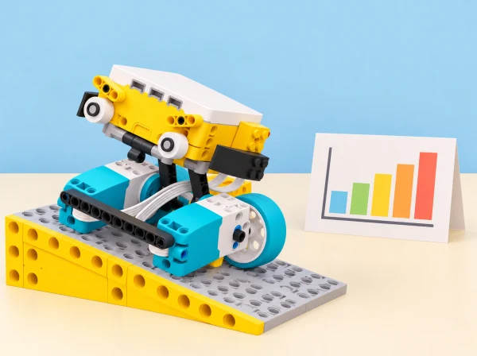
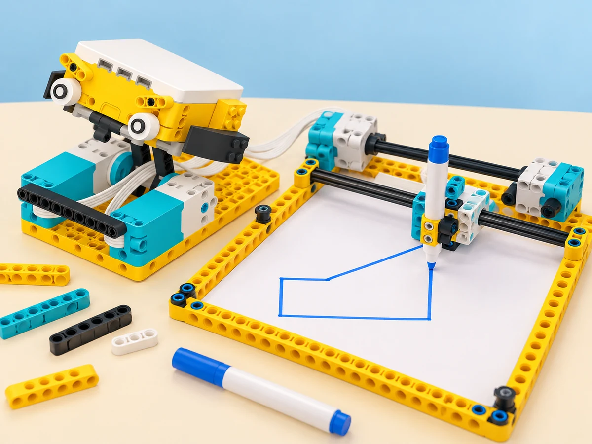
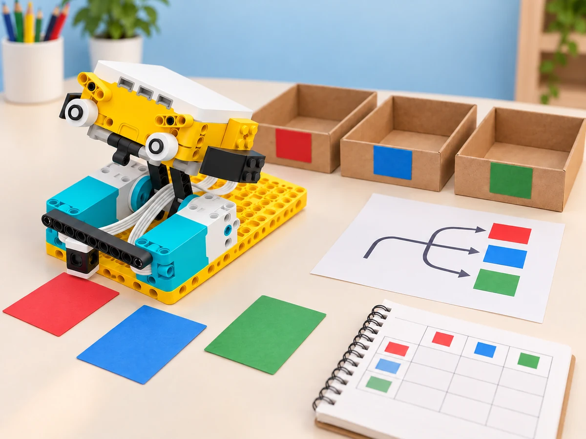

El centre logístic de la biblioteca
🏷️ Biblioteca i comunitat
🌱 Situació, repte i intenció
🎯 Aprenentatges i vocabulari
- Aplicar criteris de qualitat per preparar i verificar un paquet fictici de llibres.
- Planificar i depurar una ruta de lliurament amb distàncies i punts de control observables.
- Registrar cada transferència de la maqueta sense incorporar noms, préstecs ni dades de lectores reals.
- Explicar quines parts del procés pot executar el robot i quines decisions continuen sent humanes.
🧰 Materials i preparació
Per a S1–S6: SPIKE Prime, graella de paper, fitxes fictícies, cartró i els sensors que cada repte requerisca, comprovats amb el hub i l’app del centre. Per a S7: dos fulls per alumne i llapis; les peces de construcció són opcionals i no s’utilitza hub ni programari. Aquesta situació és una maqueta didàctica: no gestiona préstecs, panys ni comandes reals de la biblioteca.
📅 Seqüència didàctica
Durada orientativa: una sessió per a les activitats d’inici i depuració; dues per al traçador X-Y, la capsa lògica i el repte final d’automatització. Abans de cada repte, l’equip formula una predicció; després prova, registra el resultat i explica un canvi. Les fitxes de comanda, claus i paquets són inventades: el robot només treballa en una maqueta i no s’utilitza per controlar serveis reals.
El control de qualitat de la mediateca (Place Your Order, 45–60 min)
Fase 1 · Activem i prediem
Repartiu una comanda fictícia de llibres i descomponeu «comprovar que el paquet està preparat» en accions observables: posar el sistema en marxa, llegir una fitxa de color, respondre amb moviment i donar un senyal final. Pregunteu quin ordre d’accions esperen veure al vídeo i què hauria de passar si la fitxa canvia.
Fase 2 · Explorem i construïm
En parelles, feu una construcció en tàndem: una persona prepara les peces i reconeix les accions del vídeo de guia; l’altra munta el capçal. Després canvieu o compartiu tasques perquè totes dues puguen explicar el model. Alineeu els motors abans d’executar-lo i comproveu que el sensor de color veu la fitxa sense que els dits queden darrere: els pot detectar com un color violeta.
Fase 3 · Expliquem i registrem
Mireu el primer vídeo tantes vegades com calga, anoteu només les accions observades en pseudocodi i convertiu-les en la primera pila de blocs. Mireu el segon vídeo, distingiu les accions noves i escriviu pseudocodi i piles addicionals. Registreu què s’ha afegit i què s’ha mantingut igual entre versions.
Fase 4 · Apliquem i millorem
Demaneu a una altra parella que seguisca les instruccions sense que les completeu oralment. Compareu la precisió del pseudocodi i el funcionament del model, localitzeu una ambigüitat i reviseu-la. Si queda temps, graveu un tutorial breu propi o feu una guia il·lustrada per muntar i programar el control de qualitat.
Fase 5 · Comprovem i reflexionem
El carretó que feia una ruta inesperada (Out of Order, 45 min)
Fase 1 · Activem i prediem
Presenteu el carretó de repartiment de la maqueta —dos motors mitjans al davant per avançar o recular i un motor gran al darrere per dirigir-lo— i un programa intencionadament defectuós. Abans d’executar-lo, cada parella dibuixa la ruta que espera i prediu quin tram pot resultar incorrecte.
Fase 2 · Explorem i construïm
Executeu el codi sense modificar-lo i descriviu el símptoma; marqueu cada acció real sobre el mapa de ruta propi. El moviment pot ser una mica imprevisible: és una propietat del model i no una fallada que l’alumnat haja de «corregir» mecànicament.
Fase 3 · Expliquem i registrem
En parelles, feu una llista d’errors possibles i proposeu una causa per a cadascun. Anoteu el símptoma observat, la hipòtesi i quin bloc o valor podria explicar-lo; contrasteu les hipòtesis abans de tocar el programa.
Fase 4 · Apliquem i millorem
Canvieu un únic bloc o valor cada vegada i torneu a provar. Compareu les estratègies i programeu el carretó perquè seguisca un segon trajecte nou. Anoteu els canvis amb comentaris clars perquè una altra parella puga continuar el treball.
Fase 5 · Comprovem i reflexionem
Traçador de rutes entre prestatgeries (Track Your Packages, 2 sessions de 45–60 min)
Fase 1 · Activem i prediem
Presenteu el repte de traçar el mapa de passadissos de la mediateca i predigueu com es pot traduir cada tram a moviment dels motors. Dibuixeu una ruta curta amb angles rectes i marqueu quins trams seran verticals i quins horitzontals.
Fase 2 · Explorem i construïm
Munteu un traçador X-Y amb una agulla ampla que llisque sobre paper. En tàndem, una persona construeix la part superior del traçador i l’altra la base i l’agulla; després inspeccionen juntes que el conjunt es moga lliurement. Practiqueu com carregar el full sense arrugar-lo i comproveu primer cada pila de codi per separat. Comenceu amb línies verticals i horitzontals; reserveu diagonals per a una segona prova. Registreu les rotacions del motor i la longitud que ha traçat cada intent.

Fase 3 · Expliquem i registrem
Combineu les piles en un sol programa reutilitzant blocs i ajustant paràmetres. Traceu el mapa propi de passadissos i una diagonal cap a una prestatgeria fictícia. Compareu la longitud prevista amb la traçada i representeu en una gràfica almenys dos parells (rotacions, centímetres).
Fase 4 · Apliquem i millorem
A la segona sessió, feu un segon mapa i comenteu el codi reutilitzat. A partir dels dos parells registrats, proposeu una regla aproximada del tipus distància = p × rotacions + q i mesureu una tercera ruta per comprovar la predicció o recalibrar. Si les diagonals dificulten l’entrada, comenceu amb verticals i horitzontals; com a ampliació, convertiu el traçador en plòter, dibuixeu un símbol original i resoleu una forma més complexa.
Fase 5 · Comprovem i reflexionem
Una condició per controlar l’accés a la capsa de préstec (Keep It Safe, 90–120 min)
Fase 1 · Activem i prediem
Temps orientatiu · 10 min. Activeu la conversa amb tres preguntes: «Quin dispositiu de seguretat coneixes?», «Què fa que una contrasenya siga fàcil o difícil d’endevinar?» i «Què és una condició?». Mireu el vídeo de la lliçó oficial i formuleu el repte propi: com podem fer que una capsa de maqueta responga a una regla clara? Cada equip dibuixa una predicció amb dos estats —porta tancada i porta oberta— i escriu què espera que faça la capsa quan rep l’ordre triada.
Fase 2 · Explorem i construïm
Temps orientatiu · 35 min. En tàndem, una persona munta la porta i l’altra el cos de la capsa; després revisen juntes les unions i connecten el motor segons les instruccions de construcció disponibles al centre. Executeu el programa inicial per observar el mecanisme abans de modificar-lo. Localitzeu la clau manual per recuperar la porta si el motor queda bloquejat i deixeu preparat el motor addicional per a la lliçó següent, amb el cable fixat darrere del model.
Registreu en un dibuix quin moviment obri i quin tanca, sense introduir objectes de valor ni codis reals.
Fase 3 · Expliquem i registrem
Temps orientatiu · 15 min. Representeu la regla inicial com un diagrama de flux amb una condició i dues eixides: «si es prem A, obri; si no, es queda tancada». Identifiqueu l’entrada, la condició vertadera o falsa i l’acció del motor. Abans de programar, completeu una taula amb tres casos: A premut, A no premut i una segona pulsació després d’obrir. Compareu la predicció amb el comportament observat i anoteu qualsevol diferència.
Fase 4 · Apliquem i millorem
Temps orientatiu · 35–45 min. Programeu la regla i executeu els tres casos de la taula, reiniciant el mecanisme entre intents quan calga. Afegiu una segona condició senzilla —per exemple, prémer A i després B en l’ordre acordat— i compareu-la amb la versió inicial. Feu una prova creuada: un altre equip rep la capsa sense conéixer la regla, proposa quines entrades provarà i registra si ha pogut deduir el patró.
Si el moviment no és repetible, reviseu la posició inicial i el gir del motor abans d’atribuir el resultat al programa. Personalitzeu, si hi ha temps, la matriu de llum o el so perquè el feedback indique «prova acceptada» o «torna-ho a provar» sense revelar cap dada.
Fase 5 · Comprovem i reflexionem
Temps orientatiu · 10–15 min. Recolliu el diagrama, la taula de casos i el programa revisat. Observeu si cada alumne pot explicar què és una condició, utilitzar-la en el programa i parlar amb precisió dels límits de la maqueta. Autoavaluació amb tres nivells: «he provat una condició», «n’he provat dues» o «n’he provat més de dues»; una parella deixa un retorn concret per a S5. Com a extensió lingüística, feu un glossari breu de booleà, condició, xifratge i distingeix majúscules;
són conceptes de seguretat digital, no propietats que implemente aquesta maqueta. Reserveu cinc minuts per a desconnectar i ordenar les peces.
La font oficial pauta Engage (5 min), Explore (20 min), Explain (5 min), Elaborate (15 min) i avaluació; la planificació local amplia la construcció, les proves i l’avaluació fins a 90–120 minuts. La capsa només usa autoritzacions inventades: no és un pany segur ni guarda objectes de valor, contrasenyes reals o dades personals.
Dues condicions i una regla transparent (Keep It Really Safe!, 90–120 min en dues sessions)
Fase 1 · Activem i prediem
Recupereu la regla simple de S4 i pregunteu què pot passar si algú descobreix una contrasenya. El repte és ampliar la maqueta de caixa forta amb una condició composta: la porta només s’obri si coincideixen dues entrades. Escriviu què hauria de passar quan només n’hi ha una, quan no n’hi ha cap i quan totes dues són certes.
Fase 2 · Explorem i construïm
En parelles i per tasques complementàries, una persona construeix el cos de la caixa i l’altra la porta amb el braç motoritzat. Abans d’executar el programa, alceu el braç a la posició inicial correcta, proveu el recorregut amb cura i localitzeu la clau manual de desbloqueig. Executeu el programa inicial per observar el mecanisme; la maqueta només utilitza autoritzacions fictícies i no és un pany real.
Fase 3 · Expliquem i registrem
Compareu AND i OR amb targetes d’entrada i predigueu els quatre casos de la regla «botó A i sensor de força activat»:
- A no premut + sensor inactiu → la porta queda tancada.
- A no premut + sensor actiu → la porta queda tancada.
- A premut + sensor inactiu → la porta queda tancada.
- A premut + sensor actiu → el programa permet obrir la porta.
Expliqueu per què AND és més restrictiu que OR en aquesta regla i dibuixeu el flux abans de programar.
Fase 4 · Apliquem i millorem
Afegiu la condició composta al programa i proveu, una per una, les quatre combinacions previstes; anoteu predicció, resposta del motor i diferència. Després desafieu una altra parella a obrir la caixa de maqueta explicant quines entrades ha provat. Si la primera regla funciona, creeu una segona amb OR i una altra amb NOT per a generar un avís quan falta una autorització.
Com a ampliació, connecteu un altre sensor del set SPIKE Prime —de distància o força— i expliqueu per què l’heu triat. Reserveu temps per a guardar el material; el treball complet es distribueix en dues sessions.
Fase 5 · Comprovem i reflexionem
Criteris d’èxit: explicar què és una condició composta; programar i provar una regla; interpretar els quatre resultats; parlar de seguretat digital amb precisió. Autoavalieu-vos segons si heu creat una, dues o més condicions compostes i rebeu d’una altra parella una observació concreta i una millora aplicable. Completeu un glossari propi amb booleà, condició, condició composta, AND, OR, NOR, NOT, xifratge i sensibilitat a majúscules, amb un exemple de la maqueta.
Classificació assistida de retorns (Automate It!, 2–3 sessions, 120+ min)
Fase 1 · Activem i prediem
En els deu minuts inicials, pregunteu com treballen els robots de fàbrica: què poden detectar, com saben on estan i quines decisions milloren la precisió i la repetibilitat. Delimiteu una àrea per a guardar els prototips entre classes i prepareu una llibreta d’inventor amb espais per a esbossos, pseudocodi, prediccions, problemes i proves. Definiu el repte propi: enviar fitxes-paquet fictícies a tres destinacions de la mediateca segons el seu color.
Acordeu quina relació hi ha entre cada color i cada safata, i quins criteris indiquen una classificació correcta.
Fase 2 · Explorem i construïm
Durant 35–55 minuts, cada equip identifica les parts clau del problema, genera idees, esbossa almenys dues solucions i en tria una amb criteris explícits: llegir el color assignat, dirigir la fitxa a la safata corresponent, repetir el moviment amb precisió i facilitar la revisió. Escriviu pseudocodi abans de construir i programeu només la detecció de color que permet el sensor.
La forma, el text o el símbol de la fitxa són pistes per a les persones i no entren en la decisió automàtica: el sensor no llig paraules ni reconeix formes. Combineu rols i anoteu els problemes en lloc d’amagar-los. Si cal suport, comenceu d’un model base i milloreu-lo.

Fase 3 · Expliquem i registrem
Reserveu deu minuts per identificar i documentar els problemes que han aparegut durant el desenvolupament. Descriviu què hauria d’haver passat, què ha passat realment i quina part del mecanisme, la calibració o el programa podria explicar la diferència. Trieu una hipòtesi i modifiqueu una variable per tanda; anoteu la relació entre canvi i resultat en la llibreta d’inventor.
Fase 4 · Apliquem i millorem
En una segona o tercera sessió d’uns 60 minuts, completeu el programa i el mecanisme. Proveu primer una fitxa de cada color; després, repetiu el test canviant la forma o la paraula impresa però mantenint el mateix color per comprovar que el sistema continua classificant únicament per color. Registreu encerts, errors i calibratge. Presenteu la solució a la classe i, quan els prototips siguen prou estables, connecteu-los en una línia de triatge o afegiu un carretó de lliurament entre estacions.
L’ampliació pot afegir funcions noves, però cadascuna ha d’estar descrita en el pseudocodi i comprovada amb una prova pròpia. Reserveu temps per a ordenar el material.
Fase 5 · Comprovem i reflexionem
Una altra parella aporta feedback concret i una proposta de millora. El sistema classifica les fitxes de joc pel color; les formes i paraules només les interpreten les persones. No classifica persones ni substitueix la catalogació real.
Instruccions d’esquena a esquena (Back to Back, 45 min, híbrida i desconnectada)
Fase 1 · Activem i prediem
Dediqueu deu minuts a recuperar les idees prèvies amb «què és un codi?» i construir definicions compartides d’algorisme, error, descomposició i pseudocodi. Compareu una instrucció quotidiana amb una seqüència de blocs explicada amb paraules: què fa que les instruccions siguen clares, ordenades i executables? Cada persona tindrà dos fulls per a esbossar i escriure el seu pseudocodi.
Fase 2 · Explorem i construïm
En quinze minuts, cadascú tria fins a cinc peces i construeix, sense instruccions, un animal inventat inspirat en la fauna de l’aiguamoll valencià; l’exemple docent pot inspirar, però no cal copiar-lo. Després escriu en un full els passos necessaris perquè una altra persona el puga muntar exactament. Es pot fer amb peces de SPIKE Prime o altres peces de construcció. Si no hi ha peces disponibles, l’alumnat dibuixa o retalla formes i les usa com a components;
el repte continua sent ordenar instruccions per a construir. No cal hub, sensor ni programari.
Fase 3 · Expliquem i registrem
Durant deu minuts, en parelles, una persona llig el pseudocodi i l’altra construeix seguint-lo exactament, sense completar passos de memòria ni demanar informació que no aparega escrita. Després canvieu els rols amb el segon model. Compareu original i reconstrucció i doneu feedback respectuós amb un exemple: «aquesta instrucció era clara» o «ací faltava indicar…». Identifiqueu una ambigüitat o pas absent i anoteu com el resultat ajuda a depurar el pseudocodi.
Pregunteu-vos quins passos es poden agrupar i quins detalls són necessaris per a evitar interpretacions diferents.
Fase 4 · Apliquem i millorem
En cinc minuts, imagineu un segon animal o una altra figura i reviseu com faríeu les instruccions més fàcils de seguir. Marqueu una frase que caldria reescriure o dos passos que es podrien agrupar; si no hi ha temps per a una nova construcció, guardeu la proposta per a la pròxima classe. Relacioneu l’exercici amb la programació per parelles: una persona escriu i l’altra executa.
En modalitat remota síncrona, es pot fer la lectura en veu alta a una parella o grup reduït; en modalitat asíncrona, es comparteix només el pseudocodi i una reflexió escrita o dibuixada, sense exigir una videotrucada ni fotografies de casa.
Fase 5 · Comprovem i reflexionem
En els cinc minuts finals, cada alumne comparteix un exemple d’instrucció que descriu un algorisme pas a pas i un problema que ha identificat i corregit. Autoavaluació privada amb tres colors: roig, amb ajuda puc escriure pseudocodi i depurar-lo; groc, puc explicar com escriure’l i depurar-lo; verd, puc ensenyar-ho a una altra persona.
🧪 Evidències i avaluació
Incloem protocol de comanda, depuració abans/després, mapa X-Y, taula de proves amb condicions simples i compostes, llibreta d’inventor amb diverses iteracions, resultats de classificació i pseudocodi revisat. En cada sessió, el grup tria un indicador observable del progrés i rep una observació útil d’una altra parella; la valoració no depén de si el mecanisme «guanya» ni si la primera solució funciona. La mostra final explica una decisió que conserva privacitat o evita una automatització injusta.
♿ Participació, accessibilitat i seguretat
Les etiquetes combinen color amb forma i símbol. Es pot seguir la ruta amb un mapa tàctil o una fitxa desplaçable, i participar com a cartògraf, programador, verificador o narrador. Totes les dades de persones i llibres són inventades.
🔗 Referents i adaptació
La unitat conté set lliçons que s’han contrastat individualment en les seues fitxes públiques de LEGO Education: observació de vídeos i pseudocodi per a descompondre el control de qualitat; depuració documentada d’un carretó de repartiment; reutilització de piles de codi en un traçador X-Y; condicions en una caixa amb clau manual; condicions compostes amb AND/OR; un projecte obert d’ajudant automatitzat al llarg de 2–3 sessions; i pseudocodi sense ordinador en una lliçó híbrida amb peces flexibles.
També hem incorporat la construcció en tàndem, els objectius d’avaluació i les ampliacions públiques compatibles amb la dotació. Les instruccions detallades de l’alumnat i els models de LEGO remeten a l’app i no es reprodueixen: la proposta, la maqueta de biblioteca, les dades, els criteris, les targetes i la imatge són propis. Els muntatges i sensors es comproven amb el set disponible al centre.